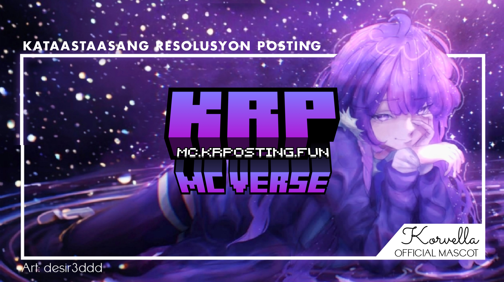

KRP: MCVerse is a project started by me on the 14th of April. It is currently active as of May 16 2020, I started this project because I had planned to make a Minecraft SMP which is based on the Philippines. The server features a 1:40 Scale Map of the Philippines, which has players scattered across the map, having their own factions. It is currently no longer run by me.
